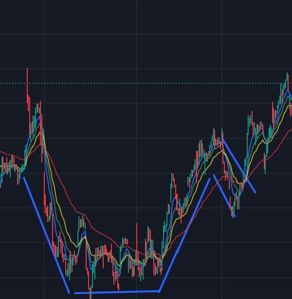

CANDLESTICK CHARTS - Candlestick charts are what most TA traders use. A candlestick consists of 4 pieces of information: The opening price of that candlestick, the close price, the high, and the low. The combination of all of these leads to either a red (price went down) or green (price went up) candlestick
FAKEOUT - A situation in which a trader enters into a position thinking price will go somewhere based off a pattern, but the movement never develops and price moves in the opposite direction.
FUNDAMENTAL ANALYSIS - When a trader looks at the fundamental metrics of a company (annual & quartely earnings, book value, possibility for potential growth, etc.). This analysis is more geared towards long term outlooks, but can be used for short term
GAPS - Gaps occur when a stock opens higher or lower than it closed the previous day. This happens when there is news or some other type of catalyst overnight
MOVING AVERAGES - A technical indicator that tells us the average price of a stock over a period of time
RSI - The Relative Strength Index, or RSI, is an oscillating indicator that moves between 0 and 100. A stock with an RSI of 0 is oversold and has a high chance of a reveral upwards. A stock with an RSI of 100 is overbought and has a high chance of a reveral downwards.
TECHNICAL ANALYSIS - In contrast to FA, a TA doesn't focus on fundamental metrics, but instead focuses soley on the price of a stock. TA requires a complete understanding of chart patterns and technical indicators. This is geared mostly towards short term, but can be used for long term if support lines are strong
VWAP - Volume Weighted Average Price, or VWAP, is a trading tool calculated by taking [(number of shares bought * share price) / total shares]
STOCK PATTERNS:

Cup and Handle Pattern - In a Cup and Handle Pattern, you can see a temporary dip in price which looks like a cup, followed by a short falling "handle". After this, price is then typically seen to climb greatly. Although this is a bullish pattern, there can be reverse C&H Patterns which are bearish (everything is reversed). Head and Shoulders Pattern - In a Head and Shoulders Pattern, you can see 2 "shoulders" in the long orange box, which are at about the same price. Then there is a head in the middle box, which is the highest price. Although this is a bearish pattern, reverse H&A Pattern are bullish patterns (everything is reversed).Pennant Pattern - A pennant pattern is extremely common in bullish or bearish trends, and is often characterized as a smaller triangle pattern. THe biggest difference between a pennant and a wedge is that a pennant has a price that comes together, making a triangle, whereas a wedge has prices that stay about the same width away, making parallel lines.Dead Cat Bounce Pattern - A dead cat bounce isn't a specific pattern, but is more or less a small uptrend of stocks during a bearish fall. It is a fakeout in price, and traders must be aware of where they are to save themselves from entering an extrmely bearish position and potentially losing a lot of money (unless they are shorting the stock).Wedge Pattern - A Wedge has parallel lines that keep it's "wedge" shape, and forbid it from becoming a triangle. They can be extremely useful to predict if a stock will continue going up or downTriangle Pattern - A Triangle Pattern has lines that intersect to make it a Triangle, and come in 3 different versions: Bullish, Bearish, and Undecided. You will know which kind it is based off the angle of the intersecting lines.
Disclaimer: Everything on this website is for learning purposes only. Consult a financial advisor before making any investment decisions with real money.